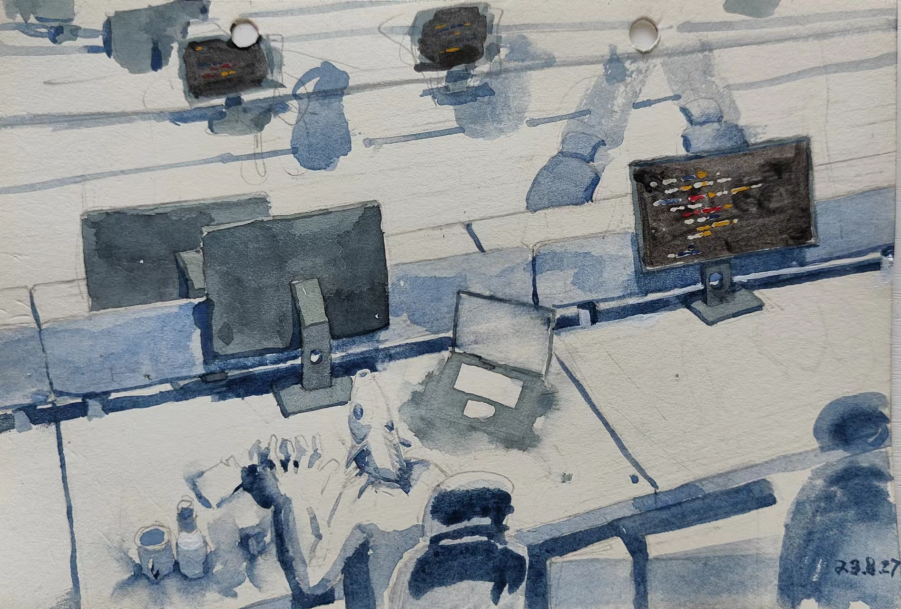
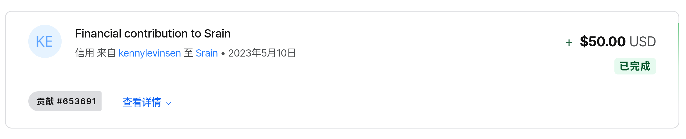
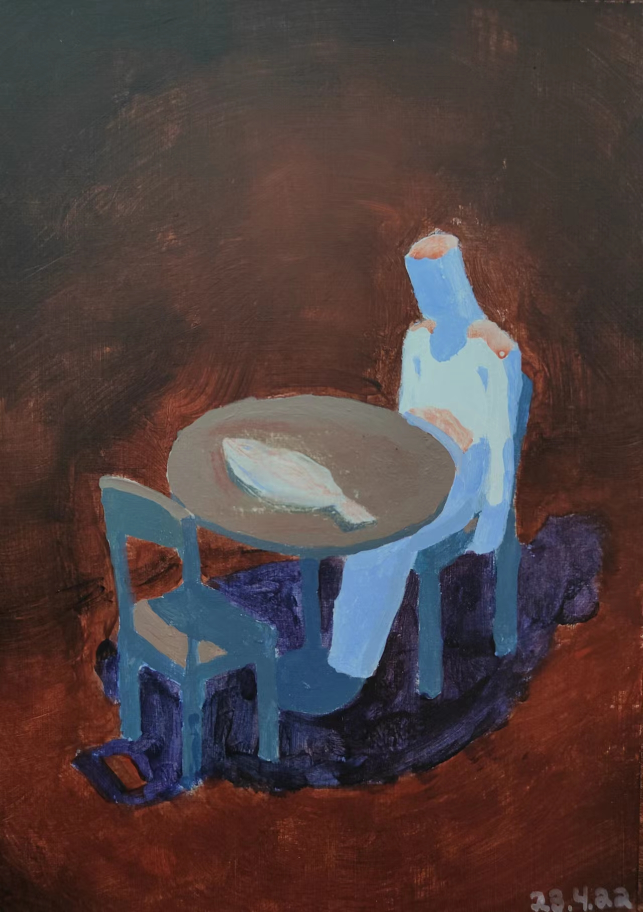
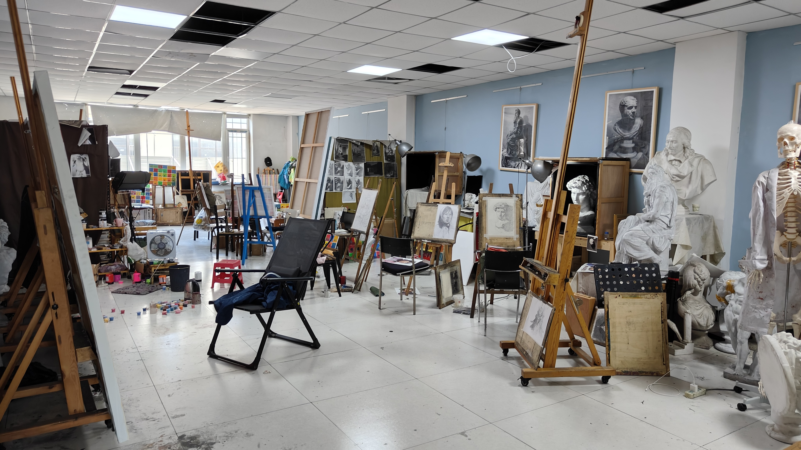
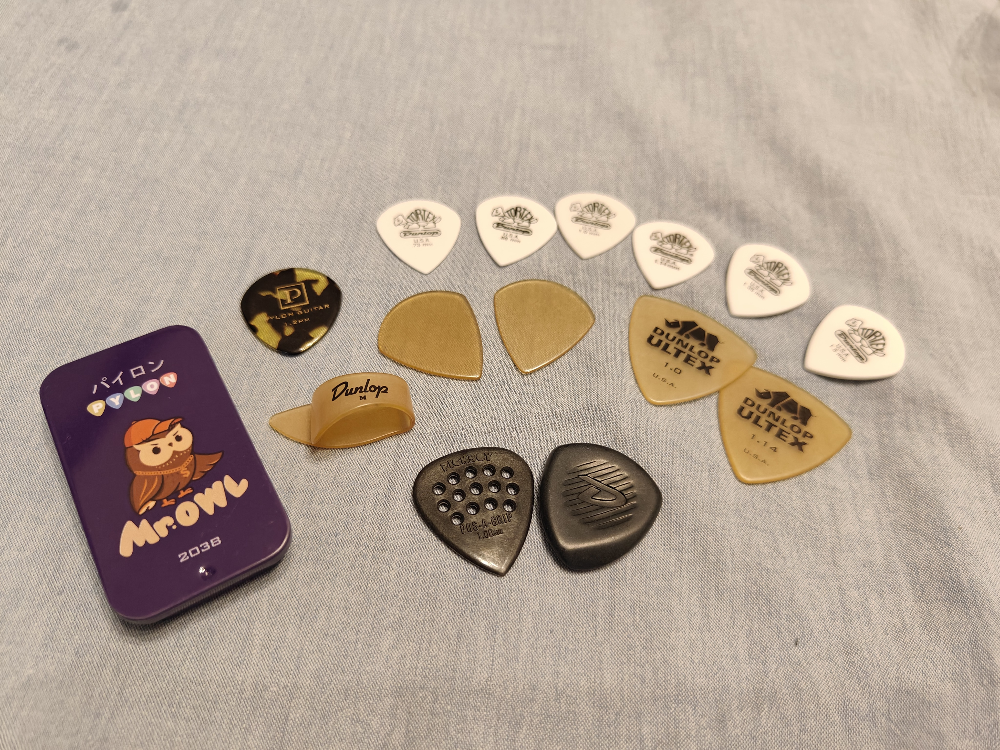

2023 更新日志#
其实每个年初都有写年度总结的冲动，但每年都因为拖延而不了了之。快元旦的时候
👤soyking 就在群里催大家写总结，现在豆豆和小杰 已各自完成 [1] [2]，
我也该动动笔了。
工作#
作为一年内耗时最多的人类行为，理当排第一。
23 年是我工作的第 5 年，也是在字节工作的第 2 年。我的运气不错，一直以来的工作内 容还算有趣，压力也并不太大，所以一直觉得还蛮有意思的。但今年心态也开始有了一 些转变：
{kind=link}

工作焦虑#
受挫、从探索到计件#
22 年中，整个团队的目标转向性能优化，自己发起的项目被要求减少投入，且开源无望。 项目在内部还算受欢迎，也有不少用户，要继续开发就要在正常工作的基础上额外抽自己的 时间，我不愿意，于是项目只好停滞，只保持最低程度的维护。
后面我转而尝试一些静态分析的工作。折腾了大半年东西是做出来了，但效果一般，落地困 难。有些灰心，转移目标去给其他成熟项目打下手去了，想着以后就做计件制的工作吧，就 不会有这样的挫败感了。
探索性的项目会有失败的风险，但有意思且可以自己预估 人天，排期相对自由
做常规的需求则不需要太动脑子，但无聊且排期紧凑： 做一个活儿的平均时间是很明确的，干完这个就会有下一个，不会空出时间让你歇着
是啊，工作就是这样，这已经是很好的职场环境了，老板不会跟你说只许成功不许失败，也 没有 PM 给你加需求说明天就要。
摆烂、屎的制作与食用、报应、字节强度#
9 月老板让我做个项目，平心而论并不是什么复杂项目，但我搞砸了：
我抱着计件制心态做这件事情：
没有 push 自己在关键的时间点完成该做的事情
很多技术决策都很随意，项目没成型就挖了坑
美名曰赶工，没有写测试
为了满足中期的进度审查，写了很多临时的，不可复用、屎一样的代码
第一次大量接触公司内部的基建，以前以为还堪一用，实际上：是屎， 每个需要用的平台几乎都有可用性问题而不得不 oncall
{kind=link}
结果就是项目到了 12 月也没能做好，被老板一直 push，还麻烦了同事来救火。 最终在 24 年的 1 月加了两周班才堪堪摆平，算是体验了一把字节的平均强度。
无法成为专家#
如上所述，今年做的都是一些提不起劲的工作，我也开始发现自己好像没什么竞争力。 周围的朋友和组里的同事已经成为了某个领域的专家，或者在成为专家的路上， 而我好像一直在做不太难的事情，也一直没有一个聚焦的领域：
泛型库只是一堆小工具的合集，有点意思的是易用性和功能上的各种 trade-off，但我也总结不出什么来
想向资深同事多学习，混个 Go Committer，发现没有余力
静态分析一直做得很浮躁。即使有搞过静态分析的同事 👤 zhangruoxu 帮助， 论文还是只看了半篇，课程 也没有学完，最后项目也凉了
在开源社区做的工作倒是持续了很长时间，可惜只是并没有什么难度，不配称为聚焦。 小众社区的事情很多事情没人做只是因为它小众，做了能累积写了写代码的熟练度， 但要靠这些形成技术壁垒，就是天方夜谭了
迷茫的生活可以辞职吗？#
现在的工作其实很好了，没有什么无法忍受的事情，无法忍受的是在迷茫中度日。 辞职不一定能解决我的迷茫，我可能还会迎来降薪、更差的工作环境甚至找不到工作。
现在的想法是：当一日和尚撞一日钟，当然还是要尽量保持专业。
开源#
今年依然花了很多时间在玩自己的开源过家家，即使是过家家也是有些新鲜事的：
第一笔开源捐赠#
Srain 在今年五月的时候收到了 50 美元的捐赠，让我开心了好几天。只可惜我已经不再 积极地维护它，在失去热情之前没能让 Srain 成为流行的 IRC 客户端，也确实是自己能力 有限。

提示
捐赠者 👤 kennylevinsen 看起来是 Sway 的活跃开发者， 看起来这种捐赠只在开发者之间流通啊 :D
The Sphinx Notes Project#
我的笔记系统由 Sphinx 搭建，👥 sphinx-notes 是我用来补充原生 Sphinx 能力的 一系列项目。Sphinx 在编程文档编写领域（尤其是 Python）相当流行，但鲜有人用来记笔 记，所以这些项目的 star 数也寥寥。
简单粗暴的东西好流行#
在不同的项目上我花的力气不同，一些项目我觉得很酷，花了大力气，没有人用； 而一些项目很简单，我只是为了方便随手一写，就会有不知哪里来的用户：
⛺ sphinx-notes/pages 用来把 Sphinx 项目推到 GitHub Pages 上，现在有 1000+ 的用户，其中包括了 微软的开源 Python 项目模板 和 PHP
⛺ sphinx-notes/strike 用来给 reStructuredText 添加 删除线 （Markdown 用户可能会觉得不可思议），仅有数十个用户，不过包括了 Haskell 的 包管理器 cabal
凯尔特歌集、简谱和说中文的剑桥科学家 [3]#
23 年最花力气的项目应该是 ⛺ sphinx-notes/lilypond，用来把自由打谱软件 LilyPond 的生成的乐谱插入到 Sphinx 文档里。
👤 kjcole 是我唯一认识的用户，他用 Sphinx + LilyPond 重新整理了 《Celtic Song Book》 [4]。他向我汇报了不少 bug，有些比较难解，但在一轮轮 迭代中还是都修掉了。2.0 有几个破坏性的改动，不知道他会不会更新。
为了练琴的仪式感，我尝试在插件里支持简谱。
多年前看过 Tuna 的康哥 @scateu 用 LilyPond 打二胡的简谱，顺着博客找到了
Silas S. Brown 写的 jianpu-ly.py。
Silas 定义了一套简谱语法，并提供了一个脚本 jianpu-ly.py 将其翻译为 LilyPond
源码。这个脚本只支持从命令行调用，并且有些复杂，不太好修改。于是我去提了
Feature Request，希望他能帮我把脚本变得可以被我的扩展复用。
Silas 懂一些中文，于是我特地在 issue 里说了点中文期望能刷好感度 ;-P
而他也快速的满足了我的请求。
jianpu-ly.py 的集成工作并没有什么值得聊的，总之我们现在也能在 Sphinx 里面
写简谱了：
![\version "2.20.0"
#(set-global-staff-size 20)
% un-comment the next line to remove Lilypond tagline:
% \header { tagline="" }
\pointAndClickOff
\paper {
print-all-headers = ##t %% allow per-score headers
% un-comment the next line for A5:
% #(set-default-paper-size "a5" )
% un-comment the next line for no page numbers:
% print-page-number = ##f
% un-comment the next 3 lines for a binding edge:
% two-sided = ##t
% inner-margin = 20\mm
% outer-margin = 10\mm
% un-comment the next line for a more space-saving header layout:
% scoreTitleMarkup = \markup { \center-column { \fill-line { \magnify #1.5 { \bold { \fromproperty #'header:dedication } } \magnify #1.5 { \bold { \fromproperty #'header:title } } \fromproperty #'header:composer } \fill-line { \fromproperty #'header:instrument \fromproperty #'header:subtitle \smaller{\fromproperty #'header:subsubtitle } } } }
}
%{ The jianpu-ly input was:
1=E
6/8
4=110
q1' q1' q6 1' q6
5 q3 1 q4
3 q3 2 q2
1. ~ 1.
q5, q7, q#2 q5 q7 q4'
5'. ~ 5'.
%}
\score {
<< \override Score.BarNumber #'break-visibility = #center-visible
\override Score.BarNumber #'Y-offset = -1
\set Score.barNumberVisibility = #(every-nth-bar-number-visible 5)
%% === BEGIN JIANPU STAFF ===
\new RhythmicStaff \with {
\consists "Accidental_engraver"
%% Get rid of the stave but not the barlines:
\override StaffSymbol #'line-count = #0 %% tested in 2.15.40, 2.16.2, 2.18.0, 2.18.2, 2.20.0 and 2.22.2
\override BarLine #'bar-extent = #'(-2 . 2) %% LilyPond 2.18: please make barlines as high as the time signature even though we're on a RhythmicStaff (2.16 and 2.15 don't need this although its presence doesn't hurt; Issue 3685 seems to indicate they'll fix it post-2.18)
}
{ \new Voice="W" {
\override Beam #'transparent = ##f
\override Stem #'direction = #DOWN
\override Tie #'staff-position = #2.5
\tupletUp
\override Stem #'length-fraction = #0
\override Beam #'beam-thickness = #0.1
\override Beam #'length-fraction = #0.5
\override Voice.Rest #'style = #'neomensural % this size tends to line up better (we'll override the appearance anyway)
\override Accidental #'font-size = #-4
\override TupletBracket #'bracket-visibility = ##t
\set Voice.chordChanges = ##t %% 2.19 bug workaround
\override Staff.TimeSignature #'style = #'numbered
\override Staff.Stem #'transparent = ##t
\mark \markup{1=E} \time 6/8 \tempo 4=110 #(define (note-one grob grob-origin context)
(if (and (eq? (ly:context-property context 'chordChanges) #t)
(or (grob::has-interface grob 'note-head-interface)
(grob::has-interface grob 'rest-interface)))
(begin
(ly:grob-set-property! grob 'stencil
(grob-interpret-markup grob
(make-lower-markup 0.5 (make-bold-markup "1")))))))
\set stemLeftBeamCount = #0
\set stemRightBeamCount = #1
\applyOutput #'Voice #note-one c''8[^.
\set stemLeftBeamCount = #1
\set stemRightBeamCount = #1
\applyOutput #'Voice #note-one c''8^.
#(define (note-six grob grob-origin context)
(if (and (eq? (ly:context-property context 'chordChanges) #t)
(or (grob::has-interface grob 'note-head-interface)
(grob::has-interface grob 'rest-interface)))
(begin
(ly:grob-set-property! grob 'stencil
(grob-interpret-markup grob
(make-lower-markup 0.5 (make-bold-markup "6")))))))
\set stemLeftBeamCount = #1
\set stemRightBeamCount = #1
\applyOutput #'Voice #note-six a'8]
\applyOutput #'Voice #note-one c''4^. \set stemLeftBeamCount = #0
\set stemRightBeamCount = #1
\applyOutput #'Voice #note-six a'8[]
#(define (note-five grob grob-origin context)
(if (and (eq? (ly:context-property context 'chordChanges) #t)
(or (grob::has-interface grob 'note-head-interface)
(grob::has-interface grob 'rest-interface)))
(begin
(ly:grob-set-property! grob 'stencil
(grob-interpret-markup grob
(make-lower-markup 0.5 (make-bold-markup "5")))))))
| %{ bar 2: %}
\applyOutput #'Voice #note-five g'4
#(define (note-three grob grob-origin context)
(if (and (eq? (ly:context-property context 'chordChanges) #t)
(or (grob::has-interface grob 'note-head-interface)
(grob::has-interface grob 'rest-interface)))
(begin
(ly:grob-set-property! grob 'stencil
(grob-interpret-markup grob
(make-lower-markup 0.5 (make-bold-markup "3")))))))
\set stemLeftBeamCount = #0
\set stemRightBeamCount = #1
\applyOutput #'Voice #note-three e'8[]
\applyOutput #'Voice #note-one c'4 #(define (note-four grob grob-origin context)
(if (and (eq? (ly:context-property context 'chordChanges) #t)
(or (grob::has-interface grob 'note-head-interface)
(grob::has-interface grob 'rest-interface)))
(begin
(ly:grob-set-property! grob 'stencil
(grob-interpret-markup grob
(make-lower-markup 0.5 (make-bold-markup "4")))))))
\set stemLeftBeamCount = #0
\set stemRightBeamCount = #1
\applyOutput #'Voice #note-four f'8[]
| %{ bar 3: %}
\applyOutput #'Voice #note-three e'4
\set stemLeftBeamCount = #0
\set stemRightBeamCount = #1
\applyOutput #'Voice #note-three e'8[]
#(define (note-two grob grob-origin context)
(if (and (eq? (ly:context-property context 'chordChanges) #t)
(or (grob::has-interface grob 'note-head-interface)
(grob::has-interface grob 'rest-interface)))
(begin
(ly:grob-set-property! grob 'stencil
(grob-interpret-markup grob
(make-lower-markup 0.5 (make-bold-markup "2")))))))
\applyOutput #'Voice #note-two d'4
\set stemLeftBeamCount = #0
\set stemRightBeamCount = #1
\applyOutput #'Voice #note-two d'8[]
| %{ bar 4: %}
\applyOutput #'Voice #note-one c'4.
~ \applyOutput #'Voice #note-one c'4. | %{ bar 5: %} \set stemLeftBeamCount = #0
\set stemRightBeamCount = #1
\applyOutput #'Voice #note-five g8[-\tweak #'X-offset #0.6 _.
#(define (note-seven grob grob-origin context)
(if (and (eq? (ly:context-property context 'chordChanges) #t)
(or (grob::has-interface grob 'note-head-interface)
(grob::has-interface grob 'rest-interface)))
(begin
(ly:grob-set-property! grob 'stencil
(grob-interpret-markup grob
(make-lower-markup 0.5 (make-bold-markup "7")))))))
\set stemLeftBeamCount = #1
\set stemRightBeamCount = #1
\applyOutput #'Voice #note-seven b8-\tweak #'X-offset #0.6 _.
\set stemLeftBeamCount = #1
\set stemRightBeamCount = #1
\applyOutput #'Voice #note-two dis'8]
\set stemLeftBeamCount = #0
\set stemRightBeamCount = #1
\applyOutput #'Voice #note-five g'8[
\set stemLeftBeamCount = #1
\set stemRightBeamCount = #1
\applyOutput #'Voice #note-seven b'8
\set stemLeftBeamCount = #1
\set stemRightBeamCount = #1
\applyOutput #'Voice #note-four f''8]^.
| %{ bar 6: %}
\applyOutput #'Voice #note-five g''4.^.
~ \applyOutput #'Voice #note-five g''4.^. \bar "|." } }
% === END JIANPU STAFF ===
>>
\layout{} }
\score {
\unfoldRepeats
<<
% === BEGIN MIDI STAFF ===
\new Staff { \new Voice="X" { \transpose c e { \key c \major \time 6/8 \tempo 4=110 c''8 c''8 a'8 c''4 a'8 | %{ bar 2: %} g'4 e'8 c'4 f'8 | %{ bar 3: %} e'4 e'8 d'4 d'8 | %{ bar 4: %} c'2. | %{ bar 5: %} g8 b8 dis'8 g'8 b'8 f''8 | %{ bar 6: %} g''2. } } }
% === END MIDI STAFF ===
>>
\midi { \context { \Score tempoWholesPerMinute = #(ly:make-moment 84 4)}} }](.././_lilypond/616dd43a754bce59de8287afd24a1fe75feb82dd/music.cropped.png)
画画#
迷茫的生活不能画画吗？#
22 年中开始，我就 {不愿, 不会, 不想} 画画了。整个 23 年，我大概只画了 15、6 张小创作，这可能是「迷茫」在我生活 里最直接的体现。
思想上我有不少的忧虑，但单独拿出来又可以并非不可解答；行动上我好像很忙， 不多的业余时间有大半沉浸在刷视频这种「报复性休息」上，余下的时间又用来写代码练琴 打球，而画画总是被排到最后。我应该放弃一些事情吗，还是它们有共存的可能？ 嘴上总是不离画画，但为什么我总是抗拒它呢？
{kind=link}

AI 恐惧（未完成）#
尽管如此，23 年还是发生了一些与画画有关的，甚至激励了我画画的事情：
怀柔的机器人 [5]#
3 月 👤胡林昊 和我说到他参加了羽呈会，在怀柔租了个工作空间，说有空过去玩
玩。6 月出差去北京参加 GopherCon，便有机会去找他，过程都记录在纸上了。
重返燕郊#
尽管我已经能画一些东西了，但色彩上一直缺乏理论，全凭本能。《色彩艺术》
是 👤李晓飞 非常推崇的书，我屡次尝试读它都没能有收获，只好当面去求教。
8 月我开始做准备，因为长时间没有画画怕面对老师心生愧疚，于是开始画小创作，
今年的大部分小创作都是这个时候完成的。
9 月动身，用尽所有的年假搭上国庆假期，进行了为期两周的 色彩训练 ，在一套相对融洽的理论下锻炼调色能力和感知能力，收获颇丰。只可惜时间不够， 未能完整地完成训练。
{kind=link}

阔别两年的画室#
厕所画室#
回来前老师叮嘱我，因为时间问题训练还没到存档点，回去要自己继续画。 训练用的是油画，难整理，味道大且有一定毒性。我租的房子里没有独立空间，考虑了一段 时间要画还是要命，最后还是找到了解决方案 —— 厕所。
厕所有门，是正儿八经的独立空间，房子里这个厕所刚好空间也大
有排气扇，流通性甚至比只有单面窗的房间好
房东有个还没扔的大地毯，铺上刚好防止弄脏地面
还有个好处是训练需要稳定的光照，在房间里哪怕一直开着灯，早晚的光照还是有明显的变 化，而我这个厕所是暗卫，只要开着灯，从早到晚都是光照都是一样的。
在这些基础上，我又做了一些保障狗命的措施：
常闭厕所门，防止味道跑出来，每次画完都把画框调色盘放到柜子里
用挥发性差、相对低毒的薰衣草油替代挥发性高，毒性大的松节油
把洗漱用品挪到外边，在别的地方刷牙洗脸
这个准备的过程让我很快乐，有种螺蛳壳里做道场的感觉。最终也算没辜负自己的准备， 在厕所里陆陆续续画了三周，完成了两张平面变调训练，勉强摸到了存档点。
生活#
身体#
相比北京的定点医院+起付线制度，杭州的医保到处都能刷，公司的商报报销也很方便，加 之我住的地方离浙一只有一公里，今年跑了很多次医院，应该是好事。
- 肺结节:
5 月查出了的 4mm 磨玻璃肺结节，可能是新冠后遗症
7 月被银行经理游说买医疗保险，发现有肺结节不能买（非标准体）
半年后复查无碍，改为年度复查
- 过敏:
7 月眼睛痒、鼻子痒，发现 IgE 1000+，比较严重了。 查了过敏原，屋尘过敏，太常见以至于好像知道了也没用
9 月觉得有时呼吸不上来（其实好早之前也有，但忽略了），诊出过敏性哮喘， 开始用 信必可
复诊几次后看起来控制住了
- 甲状腺结节:
11 月体检发现 TI-RADS 2/3 各一枚，复查后问题不大，等半年后复诊
- 头发:
由于担心变秃， 6 月开始，开始用低浓度（2%）的米诺地尔， 半年后发现似乎有稍稍变茂密 —— 比较难观测，因为本来也还没秃，总之继续用
8 月发现了第一根白头发
看起来似乎很多毛病，但所幸除了哮喘之外都是尚且不算问题，可能只是系统被观测得多了 ，随之发现的 bug 也就变多了。
睡眠相较 22 年有明显改善，大致都是 2:00 入睡，7 个小时左右，可能跟我买了小米手环 有关，某种程度上会为了好看的睡眠数据而好好睡觉。
衣食住行#
- 衣
今年没有买衣服，之前锻炼出来的一点穿搭基础可能已经还回去了。
- 食
身处美食荒漠，大部分时候工作日吃食堂，周末点陈八两。 老乡给我推荐的「鹅味研究所」应该是我的年度最佳，在杭州所有潮汕特色餐厅里， 它是最正宗的，没有之一。
5 月在广州爽快吃的几天，几乎每一家都好评，一定要说谁最惊喜的话，可能是达扬炖品。
- 住
8 月从回迁房的隔断搬到敞亮的网红 LOFT，房租怒涨 1000，体验也着实不错。 豆豆正好在我搬完家之后来睡了一宿，给了北京人民一点杭州震撼。 冬天还是要忍受楼上楼下近十度的温差，最近起居已经完全在楼上了。
- 行
5 月份和
👤YY去了趟广州，吃了四天，见了根兴和他老婆，一起逛了华农6 月份去北京参加 GopherCon，借此参加春宇的全羊局，长亭老同事们都见了一遍， 要回了押金，而后去怀柔看胡林昊的工作室
9 月底去燕郊，国庆后 👤 jinzhu 问我要不要顺路去北京出差，于是得以和 网友同事面基；和另一拨长亭同事吃了饭；和老朋友
👤VOID001吃了饭； 和 GPY 吃了饭；还和群友 ysgg、收工小酌了一番11 月组里团建，去了阳澄湖，第一次吃大闸蟹
其实应该多出去玩玩，能带上爸妈就更好了。
- 购物
人到中年，可能没有暴富就会变抠，今年买小物件都是拼多多，大东西先看闲鱼再看 京东淘宝，而且都是挑便宜的。
看了以下没什么特别的开销，颜料、羽毛球、羽毛球鞋（今年穿坏了一双）都是必要的。 闲鱼买了旅行琴、音箱啥的基本也是地板价。
因为觉得东西太多了也在避免购物，实施了一段时间买一出一政策（每买入一件东西， 卖出或者扔掉现有的一件），买了一些闲置的设备（路由器、Pico 啥的），今年还 入账小三千 :D
- 理财
尽管去年开始就意识到理财是个刚需，但我实在没兴趣+没时间，简单挣扎过后， 目前处于放弃状态。基本上就是 短债+招行的 XX 宝+大额存单+定存，年度收益 2.29%，甚至还不如我妈 Q_Q
年中买了点寿险，明知很坑，但这钱也没有别的好去处，就这样吧。
游戏#
今年打的游戏不多：
- 旷野之息:
3 月的时候通关，可能是打通的时间跨度太大了, 总的来说没有那么享受
- 王国之泪:
借日元下跌 + Paypal 国际支付优惠 + 任亏券的组合拳 200+ 入手了。 但打了不到一半就搁置了
- 席德梅尔的文明 VI:
一切的灾厄的源头，浪费了我无数个病假用来补觉，今年足足花了 有 260 个小时在文明六上
从水下第一个生命的萌芽开始…#
我一直不喜欢玩策略类游戏，不想把为数不多的脑细胞用在游戏上，但文明六确是个特例， 玩文明甚至在一定程度上指导了我的生活。
B 站网友通常认为文明六游戏时长要达到 1000+ 才能算入门，但只打了 200+ 小时的我已经 有了一些感悟：
根据地图、国家和领袖尽早确定胜利方式（明确目标）
在每回合里做出有倾向性的、对胜利方式有利的决策（累积优势）
在关键的回合里把握住机会（厚积薄发）
这样的话雪球就很容易滚起来，到了后期就只需要坐牢了。 当然实际操作上：1 需要刷个好图， 3 需要熟练度和强大的运算能力，新手如我都是 靠打开「每回合自动存档」+ Save&Load 来凑一个好的 timing。 而 2 的话需要了解不同国家不同领袖的的特质（推荐 up 主 你好图图sdx 的真·教科书 式讲解），在此基础上再练习「有倾向性的决策」有种运筹帷幄的满足感。而这样的决策， 其实生活中也常常用得上：
我的目标是什么？我下一步的行动对此有帮助吗？
这么提问很简单，但每次要行动的时候并不会有个弹框出来让我确认，文明让我有更多这样 的自省。
音乐#
之前工作的时候会打开网易云日推，听着顺耳的加入每月歌单，基本是 JPop。近几年不太 喜欢边坐牢边听了，于是能听到的新歌少很多。
前半年基本上听 别野加奈+古川本舖；后半年突然发现了罗大佑的好，《童年》、 《滚滚红尘》这种国民级歌曲之前也听过；因为阿信采访里说《之乎者也》如何好 [6] 我也专门去找来听，但真正打动我的是《未来的主人翁》。
赵雷的《署前街少年》听着也很顺耳，并且惊讶于《我记得》真是火遍了大街小巷（以及 各种煽情小视频）。
吉他#
可能是因为今年太不想画画了，对吉他反而有了更大的兴趣，这也意外推动了 sphinx-notes/lilypond 的开发。
最大的进步是搞懂了 CAGED 系统 到底有什么用并且开始 练习。对我起最大帮助的资料应该是 @BOHAN博涵 的 如何用「CAGED系统」解锁所有【和弦、琶音、音阶】 以及 来玩吉他 的付费资料 。现在的话 CAGED 的大三已经比较熟练，能在各个把位弹 145 之类的，小三和属七反应还 是比较慢，一些指型按的质量也不够高。
其次是发现了 老姚吉他 的良心教程，坚定了唱谱有用的信念，另外网络仓鼠症也得到了 极大的满足。
歌的话完整的只练了《恋曲 1980》，《小妹》， 另外惊讶的发现很多简单的曲子（例如 《漠河舞厅》）已经能直接上手了，算是入门了吧。
另外慢慢开始用拨片了，买了一堆一一尝试后，发现 PickBoy 用着最顺手，于是又买了几个， 其他的就打入冷宫了。
{kind=link}

离镜头最近的带孔的黑色拨片就是 PickBoy#
按一年的跨度来讲，进步不大，但至少我明确了进步的路径。
- 设备
我平时很少买设备，毕竟都还没学好，但今年闲鱼上瘾了，还是小剁了一下。
🎛️Yamaha THR5a闲鱼 850 入手，偶尔连效果器用🎛️Ibanez EWP14闲鱼 450 入手，当备用旅行琴
音响没什么可说，后面的琴可以聊一聊，我平时用的是一把尼龙弦的
🎛️Martinez MSCC-14RS，有一段时间很想要钢弦的音色，又不想要多一把琴占地方。 看了 潘高峰老师的视频 讲到这把琴，看价格合适于是收了一把。- 好处：
便宜，虽然原价 1000+，但它闲置率太高了，咸鱼随随便便三五百收一把
虽然调弦高了四度（1、6 弦是 A 而不是 E），但好歹是把全功能吉他
26 寸和尤克里里一样，出差带上毫无压力，没事就能摸摸
- 坏处：
有效弦长短 + 做工一般带来了严重的音准问题，12 品就能有一个半音的偏差
品格太小，中高品位手指就放不太下了，能按的和弦有限
琴体太小带来的盒子音，不算大问题
现在的功夫用这把琴弹得很难听，还是欣赏一下 YouTube 的大佬吧：
警告
另外吐槽一下，今年吃过最大的亏竟是买吉他课，咸鱼接盘了别人的吉他课，第一位老师勉 强还行，就是表达能力不好且完全不备课（草台班子+1），但好歹功夫有的。结果上了 5、6 节就跑路了。第二位老师是个无题弹磕磕巴巴但又洋洋得意的精神小伙，引发了我的生 理性厌恶，并且告知我课程是「无限课时，每课时只有 30 分钟」，之前那个老师给你上一 个小时是好心 blahblah。拜托，我来的单程就要 30 分钟了……
点名批评杭州「生而非凡吉他（三坝店）」，因为我是收的二手课，并且对杭州流氓的 预付费服务有所领教，就没有和他们纠缠下去。
羽毛球#
今年羽毛球也有不小进步，在 大柳羽球 陆陆续续上了 20+ 节课；在网上也看了很多 刘辉教练 的视频，只是不知道有多少转化到了实战中。
训练的大部分时间还是在练基本技术，矫正动作，全场步伐之类的。现在步伐自我感觉不错 ，有启动步了，网前被晃的概率比以前小很多，正手头顶也能转过身去。主动的高吊杀 整体的失误率也低了。反手还是不好，顶多勉强回一个不加力的过渡。如果不考虑反手的话 ，现在也许有个弱四级。
今年也开始参加比赛了：一次公司内部比赛，被带飞到了第一名，但因为太弱几乎没有上场 机会（甚至因为队友整体实力太强，连被田忌赛马都没机会），所以毫无体验感； 另一次是大柳的学员赛，小组赛 7 场 1 胜 6 败，意识到自己在「会参加业余比赛的爱好者」 里还属于食物链的末端。但总之每参加一次，都会有衣服穿，挺好的。
伤病方面， 轻微的膝盖、肩膀不适是有的，但都通过减少运动和矫正动作缓解/解决了， 唯一大点的毛病是因为新鞋不合脚导致右脚大拇指甲掉了… 以及最近觉得小腿酸痛，经 老中医球友提醒可能是胫夹症，每日提踵恢复中。
总结#
写累了，不总结了。
脚注#
如果你有任何意见，请在此评论。 如果你留下了电子邮箱，我可能会通过 回复你。